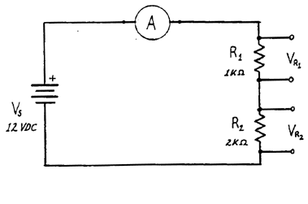
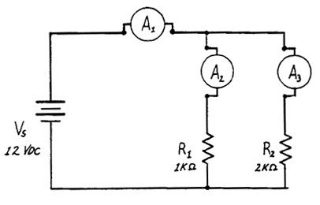
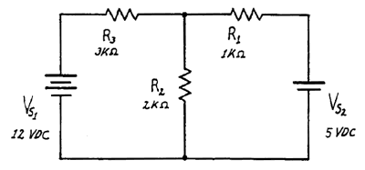

Experiment #1: D.C. Circuits
Reference: Simpson Ch 1, Appendices A & C
Objective: To become familiar with Ohm's law, Kirchoff's laws and their use in
analyzing basic D.C. Circuits containing only resistors.
Procedure: Digital multimeters will be used for the voltage and current
measurements. Refer to the description of the multimeter in the lab
manual for further details. The voltage will be obtained from the Pasco
power supply (refer to the instructions). Note that part IIIB can be
done outside of lab.
I. Series Circuits:
A. Wire the circuit shown in Figure 1.

Figure 1
- Measure and record the values for the current, the voltage
across R1 (VR1) , the voltage across R2 (VR2), and the supply voltage. Remove, measure and record the values of your resistors.
- In order to have the meters read in the "forward" direction the
connections to the + and - meter terminals must be one of the
two possibilities.
- Sketch your circuit showing its working connections
- Justify the connections in terms of Ohm's law and the
direction of current flow.
- Calculate the current based on the resistance values (see the
text for a color code chart) and compare it with the result from
part 1. If there is a difference, is it reasonable?
B. Calculate the equivalent resistance for R1 in series with R2. Replace
them with Req and measure the current. Compare the result with that
from part A.1. Is the comparison reasonable?
II. Parallel Circuits
A. Wire the circuit shown in Figure 2.

Figure 2
- Measure and record the voltages across R1 and R2 and the power supply. Record your resistor values. Show on a
sketch the connections of the + and - meter leads.
- Insert the milliammeter into the circuit in each of the locations
(A1), (A2), and (A3) in turn. Record each reading, and show on a
sketch the orientation of the + and - connections.
- Compare the value of (I1) with those of (I2) and (I3). Is the
comparison reasonable in terms of circuit theory?
B. Compute the equivalent resistance of R1 in parallel with
R2. Replace them with Req and measure the current.
Compare it with the results from part 2 above. Is the
comparison reasonable?
III. More Complicated Circuit
A.Set up the circuit shown in Figure 3.

Figure 3
- Double-check your wiring to be sure it is as the schematic
shows.
- Measure and record the voltages across each resistor. Make a
sketch showing the polarity of the voltages as indicated by the
polarity of the voltages as indicated by the voltmeter
connections. From the voltage across each R, calculate the
current through the resistors.
B. Calculate theoretically the currents flowing in each resistor (including
the direction) and compare the results with those obtained in part A.
Is the comparison reasonable?
|
Index |